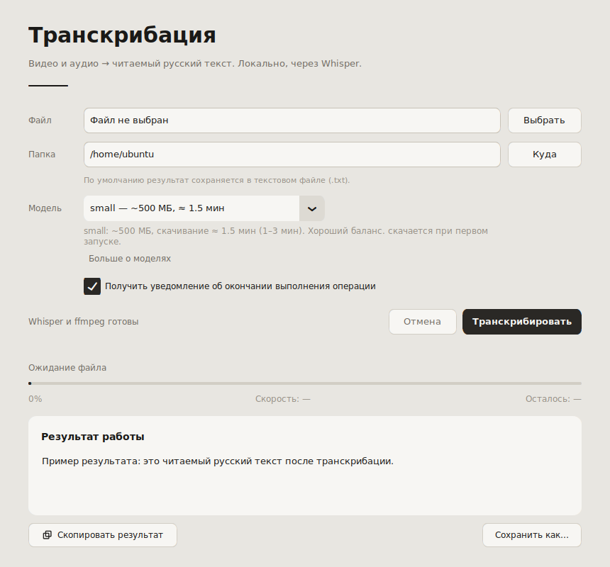

macOS-приложение: видео → читаемый русский текст (локальный Whisper). Установка через обычный .dmg, запуск по иконке — без App Store.

transcription.dmg (последний релиз)При первом запуске приложение само предложит бесплатно установить Whisper из себя (после вашего подтверждения).
Если macOS блокирует запуск (не из App Store): Системные настройки → Конфиденциальность и безопасность → Всё равно открыть.
.txt).txt, .md, .doc, .pdf, .rtf, .htmlГотово к установке на macOS 12+
Скачать transcription.dmg